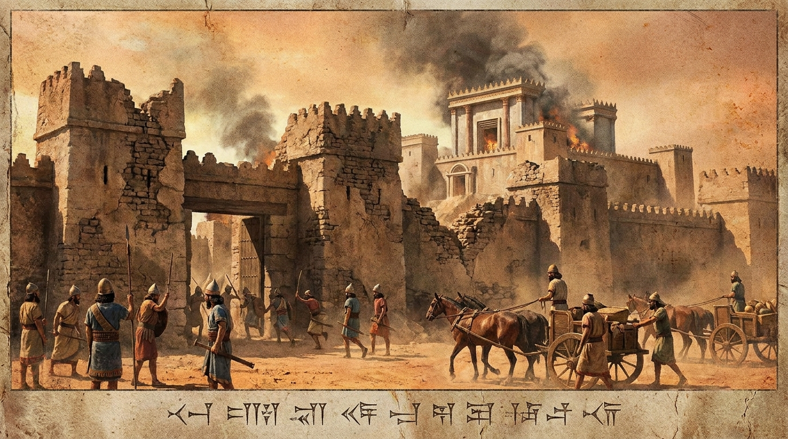

O Declínio e o Exílio
O livro de 2 Reis continua a dramática história dos reinos divididos de Israel e Judá. A narrativa destaca o poderoso ministério de milagres do profeta Eliseu, mas também documenta a contínua rebelião e idolatria dos reis. Essa desobediência persistente culmina no julgamento final de Deus: a destruição do Reino do Norte (Israel) pela Assíria e, mais tarde, a queda do Reino do Sul (Judá) e a destruição de Jerusalém pelo império da Babilônia.
Ficha Técnica
- Autor: Desconhecido (a tradição judaica atribui ao profeta Jeremias)
- Tema Principal: O declínio espiritual e moral, o julgamento de Deus sobre a idolatria e o exílio de ambas as nações.
- Versículo-Chave: "Tudo isso aconteceu porque os israelitas haviam pecado contra o Senhor, o seu Deus, que os tirara do Egito, das mãos do faraó, rei do Egito. Eles adoraram outros deuses..." (2 Reis 17:7)
Estrutura
- A sucessão de Elias e o ministério de Eliseu (Caps. 1-8)
- O declínio e a queda do Reino do Norte (Israel) (Caps. 9-17)
- Os últimos anos do Reino do Sul (Judá) e reformas (Caps. 18-24)
- A queda de Jerusalém e o Exílio na Babilônia (Cap. 25)